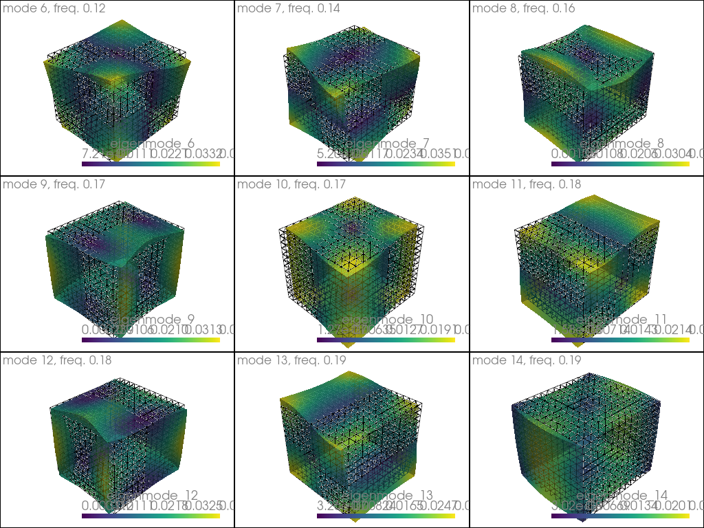

Resonances of an aluminum cube
Eigenmodes
3D
Comparison with literature data
[1]:
import numpy as np
from dolfinx import mesh, fem, default_scalar_type
from mpi4py import MPI
from petsc4py import PETSc
from elastodynamicsx.pde import material, PDE
from elastodynamicsx.solvers import EigenmodesSolver
FE domain
[2]:
L1, L2, L3 = 11.92, 10.93, 9.86 # Lengths, in millimeters
Nx = Ny = Nz = 6 # Nb of elts.
extent = [[0., 0., 0.], [L1, L2, L3]]
domain = mesh.create_box(MPI.COMM_WORLD, extent, [Nx, Ny, Nz])
V = fem.FunctionSpace(domain, ("Lagrange", 2, (domain.geometry.dim,)))
Define the material law
Material: - Aluminum - isotropic elasticity
Units: - \(\rho\) in g/cm3 - \(C_{ij}\) in GPa - -> frequencies in MHz
[3]:
rho, C11, C44 = 2.788, 109.26, 26.72
lambda_ = C11 - 2 * C44
mu = C44
rho = fem.Constant(domain, default_scalar_type(rho))
lambda_ = fem.Constant(domain, default_scalar_type(lambda_))
mu = fem.Constant(domain, default_scalar_type(mu))
aluminum = material(V, 'isotropic', rho, lambda_, mu)
Assemble the PDE
[4]:
pde = PDE(V, materials=[aluminum])
Solve
[5]:
# ## Initialize the solver; prepare to solve for 20 eigenvalues
M = pde.M() # mass matrix (PETSc)
C = None # None to ensure no damping
K = pde.K() # stiffness matrix (PETSc)
eps = EigenmodesSolver(V.mesh.comm, M, C, K, nev=20)
[6]:
# ## Run the big calculation!
eps.solve()
# ## End of big calc.
[7]:
# ## Get the result
# eps.printEigenvalues()
eigenfreqs = eps.getEigenfrequencies()
# eigenmodes = eps.getEigenmodes()
eps.plot(V, slice(6,6+9), wireframe=True, factor=30) # Avoid the first 6 rigid body modes

### Compare with literature values
Data from:
Ogi, H., Sato, K., Asada, T., & Hirao, M. (2002). Complete mode identification for resonance ultrasound spectroscopy. The Journal of the Acoustical Society of America, 112(6), 2553-2557.
[8]:
freqs_OgiEtAl_exp = np.array([116.716, 143.783, 158.081, 166.5 , 169.523, 177.846, 183.875, 186.047,
190.341, 197.386, 201.133, 207.386, 209.836, 214.753, 223.548, 231.266,
233.538, 234.717, 250.98 , 251.256, 252.742, 256.122, 257.595, 258.118,
259.035, 268.54 , 277.113, 278.762, 282.311, 293.686, 293.686, 293.686,
310.109, 316.197, 317.392, 326.462, 329.034, 332.441, 333.364, 336.65,
337.359, 338.276])
freqs_OgiEtAl_calc = np.array([116.32 , 143.186, 158.44 , 166.113, 169.338, 178.36 , 184.57 , 185.078, \
190.206, 197.692, 201.462, 207.096, 211 , 215.613, 223.219, 230.804, \
233.329, 234.758, 250.777, 251.038, 252.303, 256.849, 258.064, 258.874, \
259.203, 267.746, 276.736, 279.144, 282.773, 293.016, 304.593, 305.316, \
309.591, 315.775, 317.931, 326.556, 329.369, 332.732, 332.271, 336.218, \
337.511, 337.71])
print('Eigenfrequencies: comparison with litterature values')
print(' FE \tOgi et al, calc.\t Ogi et al, exp. \t(kHz)')
for fFE, fOgi_calc, fOgi_exp in zip(eigenfreqs[6:]*1e3, freqs_OgiEtAl_calc, freqs_OgiEtAl_exp): # *1e3 to convert MHz into kHz
print(str(round(fFE, 3)) +"\t "+ str(round(fOgi_calc, 3)) +"\t\t "+ str(round(fOgi_exp, 3)))
Eigenfrequencies: comparison with litterature values
FE Ogi et al, calc. Ogi et al, exp. (kHz)
116.414 116.32 116.716
143.605 143.186 143.783
158.517 158.44 158.081
166.27 166.113 166.5
169.457 169.338 169.523
178.607 178.36 177.846
184.935 184.57 183.875
185.384 185.078 186.047
190.293 190.206 190.341
198.003 197.692 197.386
202.098 201.462 201.133
207.531 207.096 207.386
211.323 211.0 209.836
216.115 215.613 214.753